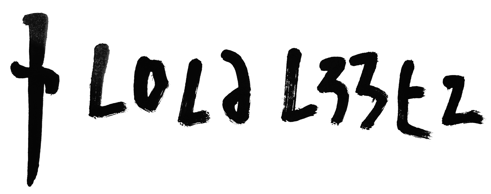

About
L0la L33tz is an independent journalist working on the intersection of cyber, finance, and national security.
Her reporting has aided governmental inquiries into financial privacy technologies, prompted responses from members of Congress and the US Treasury, influenced policy at Fortune 500 companies such as Google, and drawn criticism from the US Department of Justice.
In 2024, L33tz founded The Rage, an independent publication covering financial surveillance.
She is not available for public speaking.